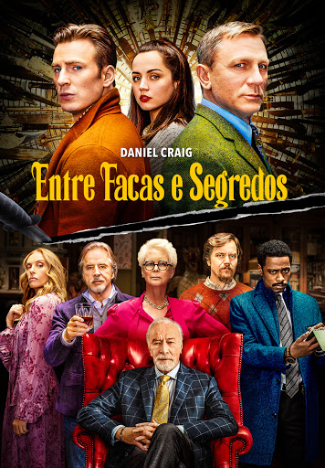

Um mistério irresistível e cheio de reviravoltas que te prende do início ao fim!

Na trama de Entre Facas e Segredos, após comemorar 85 anos de idade, o famoso escritor de histórias policiais Harlan Thrombey (Christopher Plummer) é encontrado morto dentro de sua propriedade. Logo, o curioso e afável detetive Benoit Blanc (Daniel Craig) é misteriosamente contratado para investigar o caso e descobre que, entre os funcionários misteriosos e a família conflituosa de Harlan, todos podem ser considerados suspeitos do crime. Blanc vasculha uma teia de pistas falsas, chantagens e mentiras egoístas da família disfuncional de Harlan até a equipe dedicada da vítima, para descobrir a verdade por trás da morte suspeita do famoso escritor.
Gênero: Drama, Policial, Comédia
Ano: 2019
Duração: 2h:11m
Avaliação: 9,3/10
Direção: Rian Johnson
Roteiro Rian Johnson